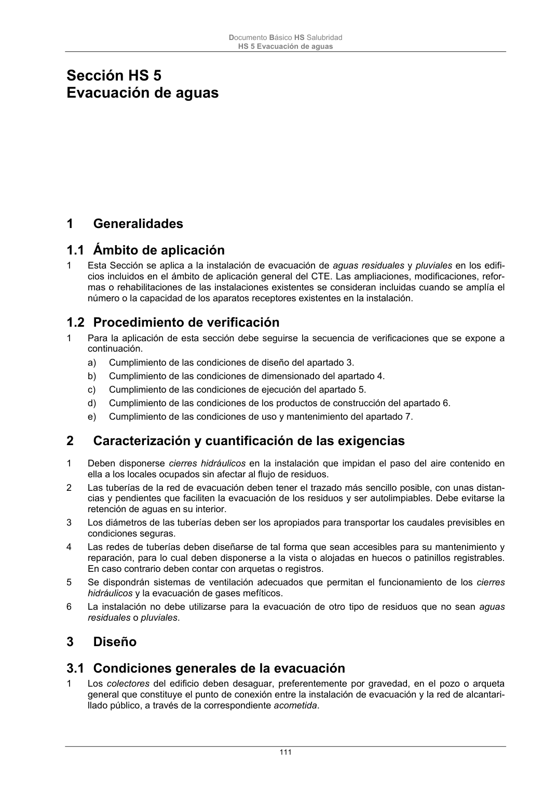

DB-HS Salubridad · edición 2022-06-14 · capa oficial
Documento DB-HS-oficial · SHA-256 del PDF 68df3caacc95f71aee2ec1ba7b2c65ae66155c21e3a8785521b8fdd4fd640d3b
Página física 111 de 184.
Copia fiel del PDF fuente · Fuente oficial
Ficha de la disposición en la fuente oficial
Formato: Texto de la página (Markdown)
Documento Básico HS Salubridad HS 5 Evacuación de aguas 111 Sección HS 5 Evacuación de aguas 1 Generalidades 1.1 Ámbito de aplicación 1 Esta Sección se aplica a la instalación de evacuación de aguas residuales y pluviales en los edifi- cios incluidos en el ámbito de aplicación general del CTE. Las ampliaciones, modificaciones, refor- mas o rehabilitaciones de las instalaciones existentes se consideran incluidas cuando se amplía el número o la capacidad de los aparatos receptores existentes en la instalación. 1.2 Procedimiento de verificación 1 Para la aplicación de esta sección debe seguirse la secuencia de verificaciones que se expone a continuación. a) Cumplimiento de las condiciones de diseño del apartado 3. b) Cumplimiento de las condiciones de dimensionado del apartado 4. c) Cumplimiento de las condiciones de ejecución del apartado 5. d) Cumplimiento de las condiciones de los productos de construcción del apartado 6. e) Cumplimiento de las condiciones de uso y mantenimiento del apartado 7. 2 Caracterización y cuantificación de las exigencias 1 Deben disponerse cierres hidráulicos en la instalación que impidan el paso del aire contenido en ella a los locales ocupados sin afectar al flujo de residuos. 2 Las tuberías de la red de evacuación deben tener el trazado más sencillo posible, con unas distan- cias y pendientes que faciliten la evacuación de los residuos y ser autolimpiables. Debe evitarse la retención de aguas en su interior. 3 Los diámetros de las tuberías deben ser los apropiados para transportar los caudales previsibles en condiciones seguras. 4 Las redes de tuberías deben diseñarse de tal forma que sean accesibles para su mantenimiento y reparación, para lo cual deben disponerse a la vista o alojadas en huecos o patinillos registrables. En caso contrario deben contar con arquetas o registros. 5 Se dispondrán sistemas de ventilación adecuados que permitan el funcionamiento de los cierres hidráulicos y la evacuación de gases mefíticos. 6 La instalación no debe utilizarse para la evacuación de otro tipo de residuos que no sean aguas residuales o pluviales. 3 Diseño 3.1 Condiciones generales de la evacuación 1 Los colectores del edificio deben desaguar, preferentemente por gravedad, en el pozo o arqueta general que constituye el punto de conexión entre la instalación de evacuación y la red de alcantari- llado público, a través de la correspondiente acometida.
